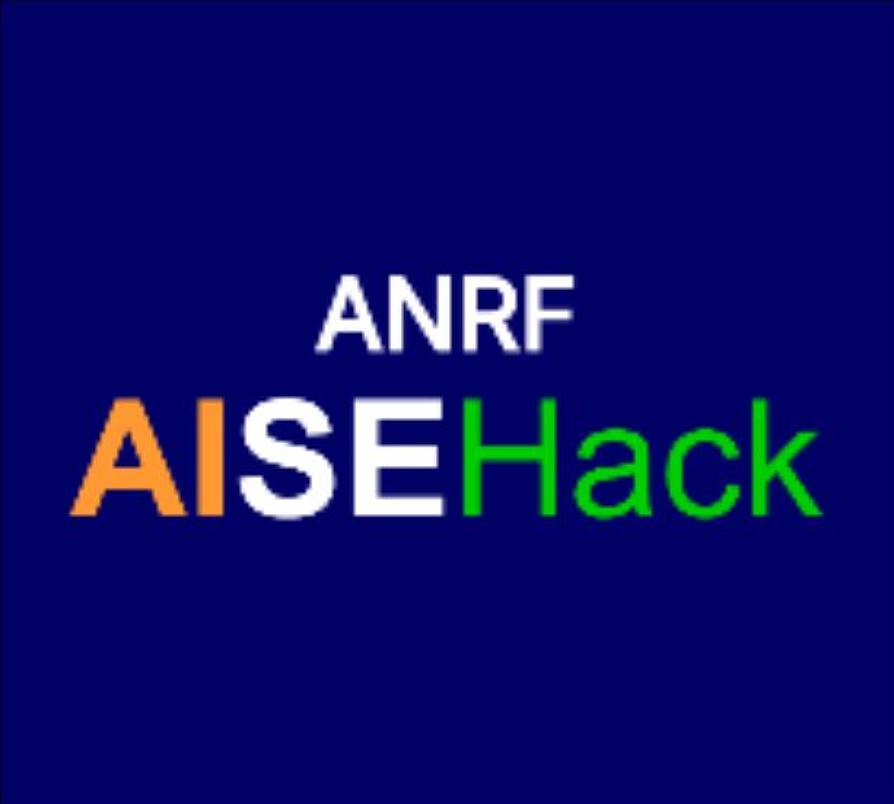
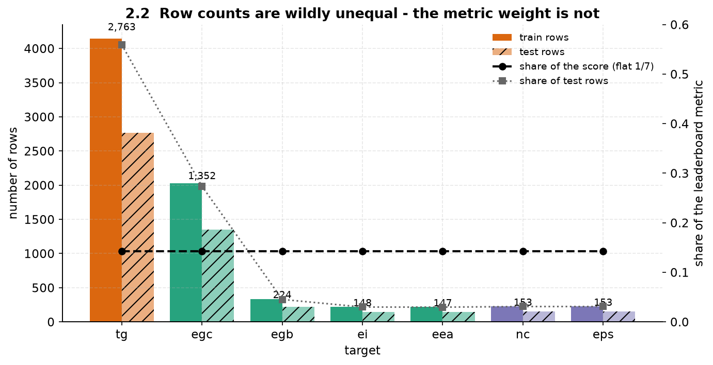
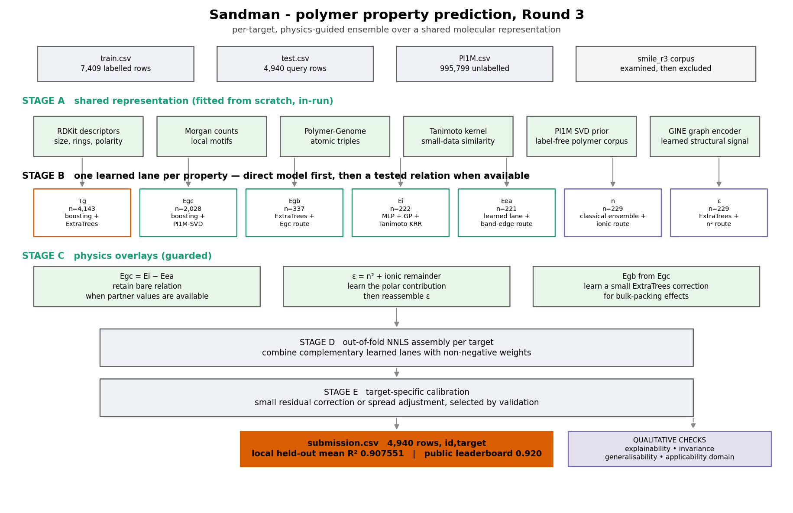
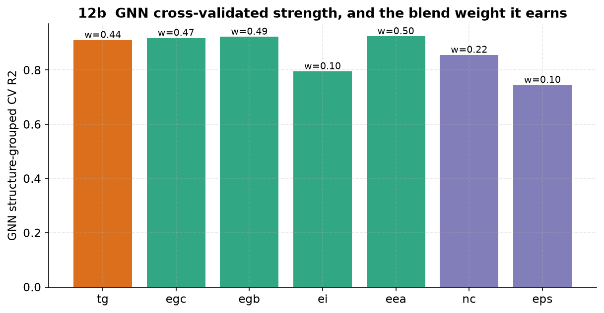
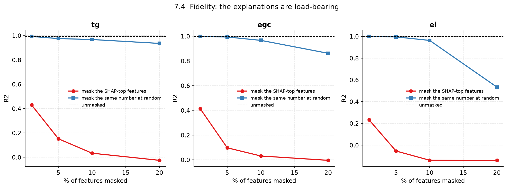
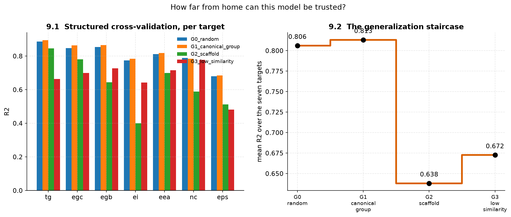
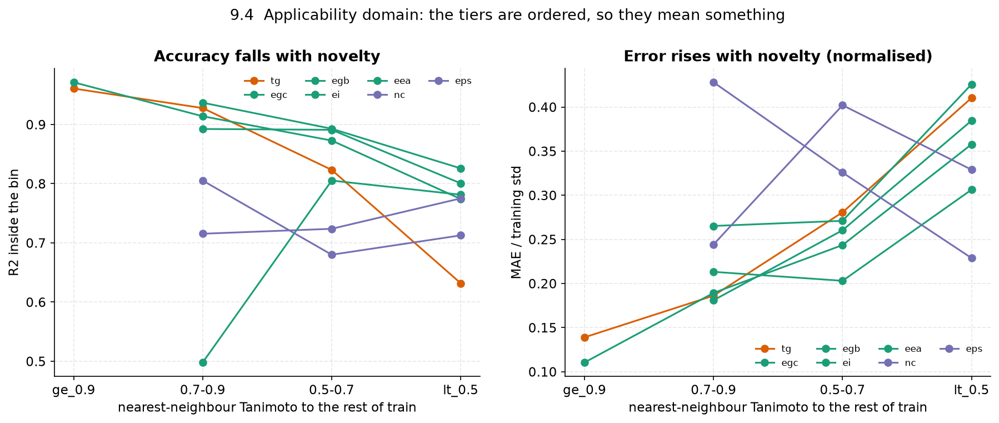
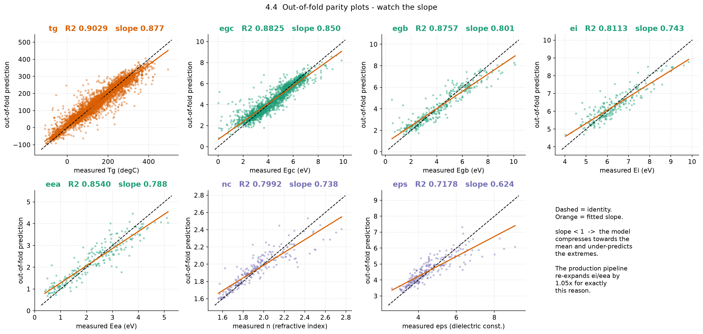
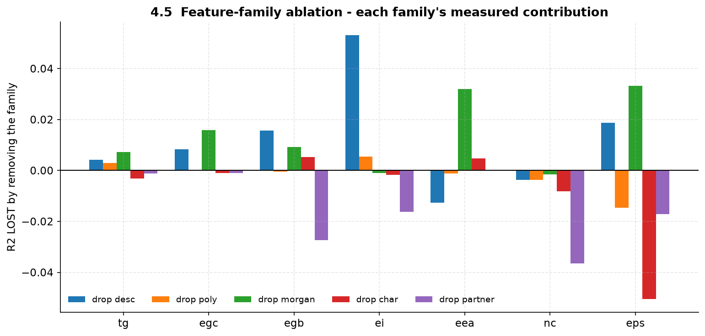
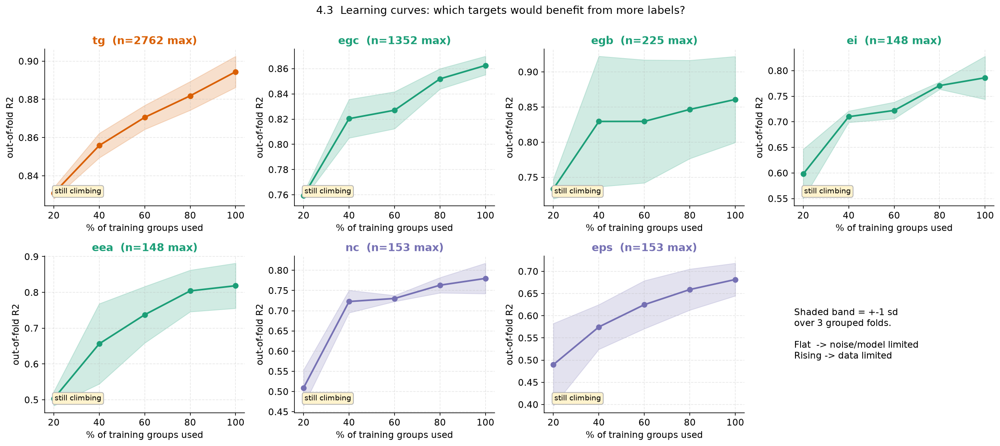

Property Prediction
Team Sandman
Vishwa Kumaresh
We use a separate learning lane for each property: data-rich targets use boosted ensembles, while scarce targets use similarity and validated chemistry.
We validate by canonical polymer structure and combine only out-of-fold predictions, preventing a polymer from validating against itself.
Polymer-aware features, target-specific learning and tested chemistry are paired with an explicit primitive-repeat normalizer for supported linear PSMILES.
A proposed repeat unit becomes a property estimate, applicability tier and explanation for the next experiment.
Molecular weight, tacticity, processing and packing are absent from the string.
SMILES spelling and cut point can change without changing a declared repeat unit.
A screen needs an explanation, a stability check and an operating boundary.
Keep a physical route only when held-out data supports it.
Descriptors, motifs, polymer environments and similarity carry different signals.
Trees dominate scarce labels; higher-capacity lanes earn their place only where data permits.
Use out-of-fold predictions to retain models that make different errors.
Band-edge learned residual: removed.
Circular stacking: rejected.
Optical decomposition: retained.
of rows.
of the score.
Optimize every target separately.
of pooled variance is Tg.

Tg: structure → property.
Small DFT: structure is often seen under another property.
favours trees
Five targets have 221–337 labels.
D-MPNN on Ei: −0.309.
GRINSZTAJN ET AL. · NEURIPS 2022

labelled training rows
test queries
PI1M unlabelled polymers
auxiliary SMILES, tested then rejected
All 12,349 rows parse in RDKit and have two repeat-unit endpoints.
1,063 canonical structures appear in both train and test.
→ GROUPKFOLD ON CANONICAL SMILES
Size, polarity, surface and shape.
Bulk physics
LANDRUM · RDKIT
Local chemical environments.
Functional groups
ROGERS & HAHN · 2010
664 polymer-aware environments.
+0.009 Egb
+0.008 nc
KIM ET AL. · 2018
Fingerprint similarity kernel.
Small-data interpolation
ROGERS & HAHN · 2010
Label-free polymer sequence prior.
Representational Learning
MA & LUO · 2020
R² · n=59
Learned residual: −0.82. Keep identity bare.
better conditioned
0 / 134 negative remainders.
residual gain
ExtraTrees captures packing effects the line misses.
Each learner earns a role on held-out folds. Negative fit-noise is excluded.
.907551
Target-specific graph weights come only from CV.
OOF residuals show compressed Ei/Eea spread; a small 1.05 adjustment restores it. The applicability tier carries the uncertainty boundary.

Does spelling or repeat length change a structurally equivalent input?
Do features named important actually carry predictive signal?
What happens as similarity to training chemistry falls?
Can the system communicate its boundary rather than bluff?
Oligomer simply means the repeat unit is written multiple times.
*OCC* translated cut-point
*CCOCCO* dimer oligomer
*CCOCCOCCO* trimer oligomer
Each is normalized to *CCO* before graph construction and inference.
dimer
trimer
period
used once
The model sees the repeat representation, not the number of times the same unit was typed.
PRIMITIVE PERIOD + ROTATION NORMALIZATION
declared monomer, translated, dimer and trimer forms normalize to *CCO*.
target predictions have zero range after normalization in the tested panel.
Features are built once from the primitive repeat, not from string length.
Capped finite chains and unsupported PSMILES use ordinary inference plus applicability tier.

R² drop when top 10% SHAP features are masked.
R² drop for an equal random mask.
HOOKER ET AL., 2019 · REMOVAL FIDELITY


seed-stability standard deviation
nearest-neighbour applicability tier
ultra-low similarity: boundary made visible
mean R² · local held-out verification
selected public leaderboard record
Seven targets count equally; Tg cannot hide weak small-property predictions.


Band-edge residual: use the bare identity.
D-MPNN on Ei: use kernels + physics.
Circular stacking: cross-fit.
Attribution ranking agreement: report it; improve grouped analysis.
One metric, two prediction regimes, seven learners selected by evidence.
Band-edge, bulk-gap and optical relations only where measurements support them.
Estimate, feature context and applicability signal guide the next experiment.
Broader repeat grammar
Extend primitive-repeat normalization beyond linear PEO and benchmark cut-point/repetition families.
Reliable small-target intervals
Cross-conformal and ensemble uncertainty for scarce electronic and optical targets.
Literature design panel
Screen proposed polymers, group explanations into chemical concepts, then prioritize measurements.
Replication study in preparation
Turn the experiment ledger and pretrained-model controls into an auditable polymer-informatics paper.
Mean R², target-wise scores averaged equally.
Selected public leaderboard record.
Completed-run scorecard checks pass; limits are shown in the deck.

only if we know
what made it.
Codebase · dashboard · technical report · research direction
[R1] Grinsztajn et al. NeurIPS, 2022.
[R2] Kim et al. Polymer Genome. JPCC, 2018.
[R3] Rogers & Hahn. ECFP. JCIM, 2010.
[R4] Lundberg et al. TreeSHAP. NMI, 2020.
[R5] Hooker et al. Feature removal. NeurIPS, 2019.
[R6] Bjerrum. Randomized SMILES, 2017.
[R7] Fox & Flory. Tg / chain length, 1950.